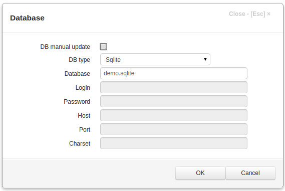

Database¶
In this dialog project database parameters are displayed. When they have been changed and OK button is clicked, the Application builder will check connection to the database and if it failed to connect an error will be displayed.
Note
When any Database parameter is changed, except DB manual update, the server application must be restarted for changes to take effect.
If DB manual update checkbox is unchecked (default), then when changes to an item, that have an associated database table, are saved, this database table is automatically modified. For example, if we add a new field to some item in the Item Editor Dialog , the new field will be added to the associated database table. If this checkbox is checked, no modifications to the database tables are made.
The DB manual update was renamed to DB manual mode in more recent version.
Note
Please be very careful when using this option.